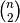

scipy.spatial.distance.is_valid_y¶
- scipy.spatial.distance.is_valid_y(y, warning=False, throw=False, name=None)[source]¶
Returns True if the input array is a valid condensed distance matrix.
Condensed distance matrices must be 1-dimensional numpy arrays containing doubles. Their length must be a binomial coefficient  for some positive integer n.
Parameters : y : ndarray
The condensed distance matrix.
warning : bool, optional
Invokes a warning if the variable passed is not a valid condensed distance matrix. The warning message explains why the distance matrix is not valid. name is used when referencing the offending variable.
throws : throw, optional
Throws an exception if the variable passed is not a valid condensed distance matrix.
name : bool, optional
Used when referencing the offending variable in the warning or exception message.